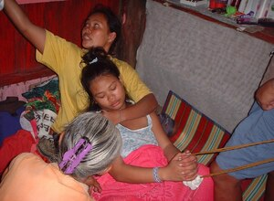

lesut 
/lɔsut/
v_rt.
“be_born”
1.
v.
for a baby (eglesut, miglesut/inlesut, lesut, agent, eg><ø-) to be bornbirth
Ka eglesut iyan ka pegpalihawang te batè ligkat te getek te mangaberes. Seini ka timpu te pegtetahad te pegkeetew te sabeka ne batè. Iyan seini ka peglihawang te batè wey timpu te pegkeetew rin. Piru kenè dè ne etew, mananap ka egkalengeran kayi su minsan degma ka me pinamula wey me kayu.
Eglesutan e ka kuddè ku.
My horse will be given birth.
Eng. birth
Tag. Kapanganakan
OCM: Childbirth (844)
DDP: Animal life cycle (1.6.3), Birth (2.6.3)
Online dict status: -
Usage level: M
v.
for a mother (eglesutan, inlesutan/miglesutan/piglesutan, lesutan, agent, eg><an-) to giving birth
Inlesutan kad bes.
oh! you'd given birth.
Eng. birth, to give; given birth
DDP: Birth (2.6.3)
Online dict status: -
Usage level: M
2.
v.
for the rice or corn (egpanlesut, migpanlesut/impanlesut, panlesut, agent, eg><ø-paN-) to bear grains (egpanlesutan, impanlesutan/migpanlesutan/pigpanlesutan, panlesuti, location, eg><an-paN-)
Egpanlesut e ka me paley diyè te basakan ney te Pasebit.
Our rice/planted in Pasabet is now bearing its grain.
Online dict status: -
Usage level: B
Updated by: RJH,TME,QDL,NJK,QDL,RAA
Last updated: 14/May/2010
"pegpalelesut" in text "Childbirth"
"lesutan" in healthbook "Ka an-anayan ne peg-uyamu ni Lolita te mig-anak"
"lesut" in healthbook "Ka an-anayan ne peg-uyamu ni Lolita te mig-anak"
"eglesuti" in healthbook "Ka an-anayan ne peg-uyamu ni Lolita te mig-anak"
"eglesut" in healthbook "Ka an-anayan ne peg-uyamu ni Lolita te mig-anak"
"palesut" in healthbook "Ka an-anayan ne peg-uyamu ni Lolita te mig-anak"
This page last updated: 19/May/2012
Copyright © 2009-2010, Matigsalug Language Christian Association, Inc